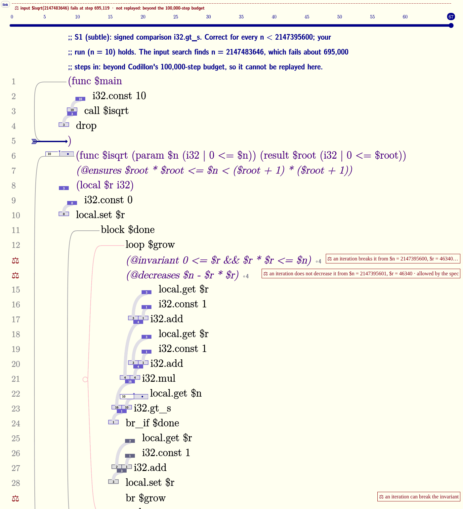
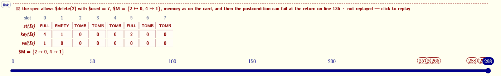
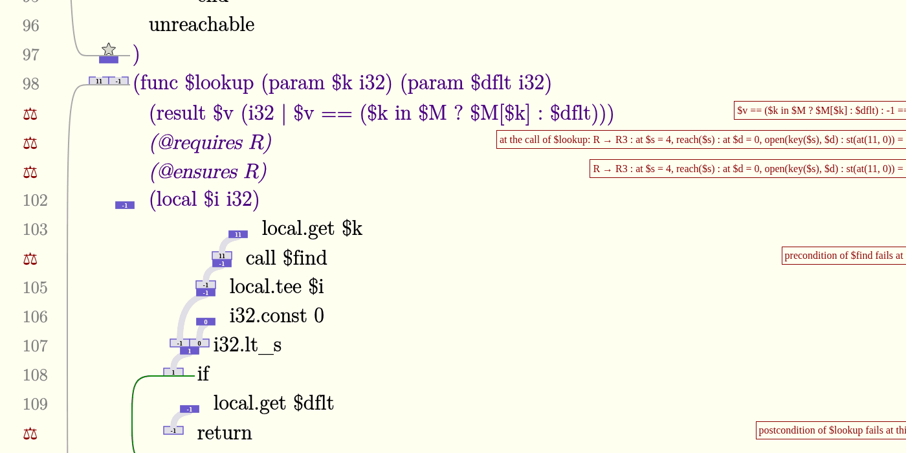

Specifications parsed, erased, checked at run time, and proved with Z3, in a fork of Codillon that runs in your browser.
Codillon is Keith Winstein's structured WebAssembly editor. This study proposed giving its types predicates, like (i32 | 0 <= $n), loop invariants and function contracts, and drawing whether a program meets them in Codillon's own visual language. That design now runs in a fork of the real editor. Every link below opens the editor on a live program in a new tab. Nothing on this page is simulated.
The proofs run in your browser, in Z3 5.3.1 compiled single-threaded to WebAssembly. It is a 3.6 MB download on first use, runs in a worker, and needs no special server setup. Small programs settle in under 2 seconds. The hash table takes about 30 seconds.
How to read the editor
Everything Codillon already draws stays the same: type shapes left of each instruction, pale dataflow ribbons, brackets for blocks (pink for loops), and a step slider over the live run. What the refinements add:
12 (gray)
Proven. The line number stays gray and nothing else appears. Silence means the solver proved every obligation on that line.
⚖
Refuted. The solver found a state the spec allows in which the obligation fails. The darkred note on the right gives that state's values.
?
Undecided. The solver neither proved nor refuted it within its budget. It is never drawn darkred and never treated as proven.
∘4
Held on this run. A runtime check that passed 4 times. It appears only on lines that are not proven. A run is evidence, not proof.
dashed track
Counterexample, not yet replayed. The dashed darkred line above the slider. Click it to load that input or state as the run. Click again to go back to your run.
number line
A refined value. An i32 with a refinement is drawn as a number line with its allowed region shaded. A value outside the region spills darkred over the rim.
Integer square root with one subtle bug: the loop's exit test compares (r+1)² with i32.gt_s instead of i32.gt_u. The run, isqrt(10), passes every runtime check. Testing would not find this either: the failing inputs are all near 2³¹, and the first check that fails comes about 695,000 steps in, far past Codillon's 100,000-step budget.

The invariant and the measure on the loop are refuted at a loop-head state the spec allows.
The invariant line gets ⚖ with the state $n = 2147395600, $r = 46340. One more iteration breaks the invariant there, because 46341² wraps past 2³¹ and gt_s reads it as negative.
The same lines also show ∘4. The invariant held four times on your run, and it is still refuted. That is the difference between evidence and proof, on one line.
The dashed track shows what the runtime input search found, $isqrt(2147483646), and says plainly that it is beyond the step budget. The proof does not need the run.
The loop-head counterexample cannot be replayed. It is a state at the top of the loop, not an input. It means the code is wrong or the invariant too weak, whether or not your run ever gets there.
An 8-slot open-addressing hash table in linear memory, specified against a ghost map $M with a representation invariant R. In this variant delete writes EMPTY instead of TOMB, which can cut another key off from its probe path. No sequence of calls is searched. Each function is proved from any state satisfying R, and the solver returns the state where delete breaks it:

The solver's counterexample, drawn as the eight slots and the ghost map: $delete(2) from this state makes the postcondition fail.
Click the dashed track to replay $delete(2) from exactly this memory, ghost map and $used. The postcondition then fails at run time on the slider.
Further down, $main's own run also fails, at the later lookup of key 11:

The run's failures: the lookup's precondition R no longer holds after the delete (clause R3 at slot 4).
When the proofs finish, the track reads "all 54 obligations proven" and the listing goes quiet.
Insert, lookup and delete are each proved to preserve R and to agree with the ghost map. Each probe loop is proved by its invariant and its measure. Every load and store is proved in bounds. The other variants, a, b, c and d, are each refuted with a solver counterexample (the verdict table below lists them).
The assertion is Fermat's last theorem for cubes below 1000. It is true, but beyond the encoding, so it gets an indigo ? and keeps its runtime count (∘1). It is not proven, and not darkred.
Results
example
proven
refuted
undecided
time in the browser
parity · isqrt · gcd · triangle (correct)
6 · 7 · 8 · 8
0
0
0.15 s · 1.2 s · 0.6 s · 0.7 s
hashtable (correct)
54
0
0
≈ 31 s
parity p1 · p2 · p3
4 · 5 · 5
2 · 1 · 1
0
isqrt s1 · s2 · s3
5 · 6 · 5
2 · 1 · 2
0
s1 ≈ 3.8 s
gcd g1 · g3, triangle-bug, isqrt-args
6 · 7, 7, 6
2 · 1, 1, 1
0
hashtable a · b · b′ · c · d
50 · 52 · 52 · 45 · 57
1 · 1 · 1 · 2 · 1
0
26–34 s
cubes (undecided on purpose)
3
0
1
≈ 1.6 s
total
398
20
1
419 obligations
The same obligations are run through native Z3 in the fork's test suite, and the expected verdict of every one is recorded in proof_verdicts.txt.
How it works
Spec language (spec.rs). Refinements and annotation lines like (@invariant …) are parsed, then erased before compiling: the binary is byte-for-byte what you would get without them. A malformed predicate is a malformed line (𝄞); an unknown name is an invalid line (✗).
Runtime checks (checker.rs). The run log is replayed with a shadow call stack, ghost state and shadow memory, and every checkpoint is evaluated: entry, exit, loop head, assert, writes to refined locals.
Verification conditions (vc.rs). Each function is executed symbolically from its contract. Loops are cut at their invariants, and calls go through the callee's contract. Every obligation becomes one SMT-LIB query: preconditions at calls, postconditions, invariant on entry and preserved, measure, asserts, refined locals, and no trap. Machine values are bitvectors with exact Wasm semantics, and memory is an array of words.
Nonlinear facts (vc_int.rs). A second, exact translation into integer arithmetic, for goals like r·r ≤ n that bitvectors decide poorly.
The solver (prover.rs). Queries go to Z3 in a Web Worker, with deterministic resource limits and a cache, so an edit only re-proves what it changed. Counterexamples are decoded into states and drawn; function-entry states replay in a fresh instance. The single-threaded Z3 build recipe is in tools/z3wasm.
Everything new relative to upstream Codillon is in one diff: 005a19f…refined.
Not done yet
Proof holes with suggestion chips and the ring, lap-chart, memory-mirror and relation lenses exist only as design previews in the walkthrough.
The hash table takes about 30 s to prove in the browser, most of it three "insert keeps R" postconditions. The editor also pauses for 130–230 ms while it generates the hash table's obligations.
Large products are treated as beyond 64 bits even when a refinement bounds them, which is why cubes stays undecided.
When the runtime input search finds a witness first, it takes the dashed track, and the solver's card is not shown.
Replays set only the memory words the spec reads, so a replayed counterexample may not reproduce the failure.
On a phone, embedded editors scale to fit and the widest programs become small.
Built 2026-10-24 from fork commit 5fcc880. Screenshots are from the deployed editor.